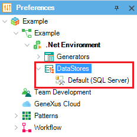
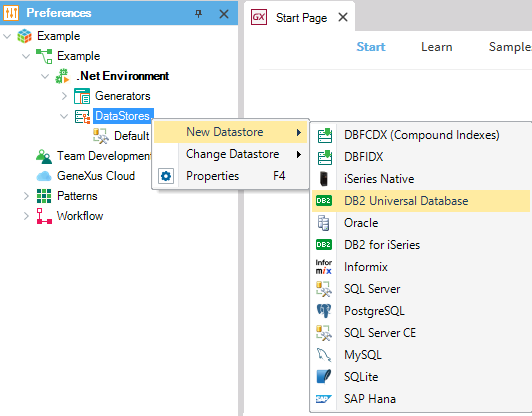
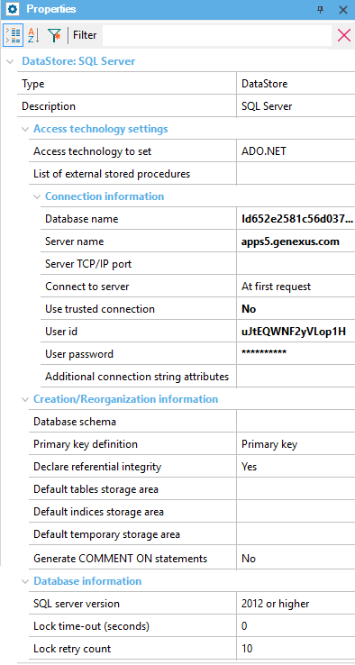

Data Stores represent symbolic database names. Multiple Data Stores are most commonly used for accessing (reading, writing or both) legacy applications. One Data Store is used for your application, and the other one represents the connection with the legacy database. In the Data Store node, you can specify the data stores for the environment. The list of data stores includes the Default one and all Data Stores defined in the environment. You can add new ones or delete the ones you don’t need.  The first Data Store on the list is always used by default and taken into account when F5 is pressed. To take another Data Store from those created, change the DataSource property value from the active Environment (Working Version in the picture).  To assign a new DBMS, right-click on the Data Stores node, click New Data Store, and select the most suitable one. To delete a DBMS from the list created, right-click on the desired one and choose the Delete option. The default Data Store cannot be deleted; and those cross-referenced (i.e. DataViews to external databases) cannot be deleted either. Data Store PropertiesEach Data Store has a set of properties containing information about the connection, creation and/or reorganization of databases and tables, etc.  |